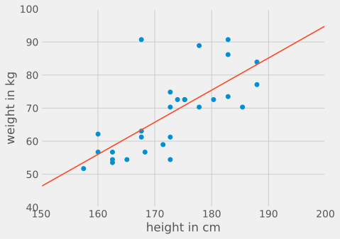
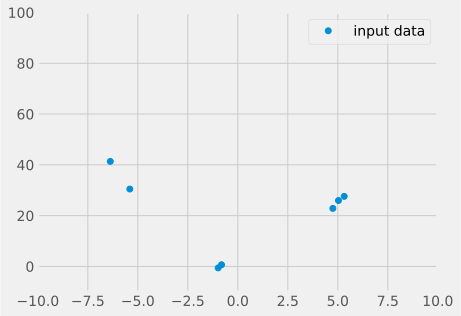
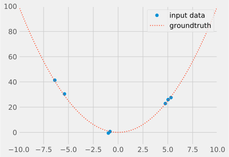
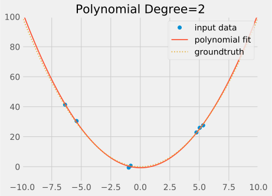
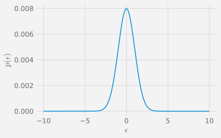

Chapter 1 Linear Regression/Least Squares
We start this module on Machine Learning (ML) with a brief revisit of Linear Regression/Least Squares (LS). You are already probably familiar with Least Squares, thus the aim is not to give you a primer on the topic. The idea is to revisit the topic through the prism of Machine Learning. We tend to forget it, but Least Squares is the original Machine Learning technique, and revisiting it will give us an opportunity to introduce all the fundamental concepts of ML, including training/testing data, overfitting, underfitting, regularisation and loss. These concepts are at the core of all ML techniques.
The least-squares method has its origins in the methods of calculating orbits of celestial bodies. It is often credited to Carl Friedrich Gauss (1809) but it was first published by Adrien-Marie Legendre in 1805. The priority dispute comes from Gauss’s claim to have used least squares since 1795.
Figure 1.1: Legendre (1805), Nouvelles méthodes pour la détermination des orbites des comètes.
1.1 Model and Notations
Let us start with a simple example. We have collected some data as shown in the figure below.
Figure 1.2: Example of collected data.
We are looking to infer a linear prediction of the weight given the height of a person:

For instance, this could be something like this: \[ \mathrm{weight (kg)} = \mathrm{height (cm)} \times 0.972 - 99.5 \]
The input of our predictive model is thus a feature vector \((x_1, \cdots, x_p)\). In our case, we only collect one feature \(x_1\), which is the height in cm.
The output of our model is a scalar \(y\). In our case \(y\) is the weight in kg. Note that it is easy to generalise to an output vector by splitting the outputs into multiple scalar outputs.
The model links the output \(y\) to the input feature vector \((x_1, \cdots, x_p)\) with a linear relationship:
\[\begin{eqnarray*} y &=& w_0 + w_1 x_{1} + w_2 x_{2} + w_3 x_{3} + \cdots + w_p x_{p} \end{eqnarray*}\]
The mathematical notations used here follow strongly established conventions in Statistics and Machine Learning and we will try to stick to these conventions for the rest of the module. Note, however, ML spans across different communities (eg. Statistics, Computer Science, Engineering) and these conventions may conflict. For instance, in Statistics, the parameters are denoted as \(\beta_0,\beta_1,\dots,\beta_p\), instead of \(w_0,w_1,\dots,w_p\).
You have \(n\) observations, for which you have extracted \(p\) features (again, these notations are conventions and you should stick to them):
\[ \begin{aligned} y_1 &= w_0 + w_1 x_{11} + w_2 x_{12} + w_3 x_{13} + \cdots + w_p x_{1p} + \varepsilon_1 \\ y_2 &= w_0 + w_1 x_{21} + w_2 x_{22} + w_3 x_{23} + \cdots + w_p x_{1p} + \varepsilon_2 \\ y_3 &= w_0 + w_1 x_{31} + w_2 x_{32} + w_3 x_{33} + \cdots + w_p x_{3p} + \varepsilon_3 \\ & \vdots & \\ y_n &= w_0 + w_1 x_{n1} + w_2 x_{n2} + w_3 x_{n3} + \cdots + w_p x_{np} + \varepsilon_n \end{aligned} \]
As the model cannot explain everything we introduce an error term \(\varepsilon\).
We want to find \(w_0, w_1, \cdots, w_p\) that minimises the error.
At this point, the error \((\varepsilon_i)_{1\leq i \leq n}\) is a vector of \(n\) separate terms. Since we cannot minimise a vector, we need to combine the \(n\) values into a single scalar that be used for comparison.
In linear regression, we choose to combine the error terms using the mean squared error (MSE):
\[\begin{eqnarray*} E &=& \frac{1}{n} \sum_{i=1}^{n} \varepsilon_i^2 = \frac{1}{n} \sum_{i=1}^{n} \left( w_0 + w_1 x_{i1} + \cdots + w_p x_{ip} - y_n \right)^2 \end{eqnarray*}\]
The choice of the mean squared error is a fundamental aspect of linear regression. Other error metrics are possible (eg. mean absolute difference) but the they lead to very different mathematics. In ML, we call this function the loss function.
1.2 Optimisation
To find the optimal values for \(w_0, w_1, \cdots, w_p\) that minimise the mean squared error function \(E(w_0, w_1, \cdots, w_p)\), we note that, at the minimum of \(E\), \(\frac{\partial E}{\partial w_0}=\cdots=\frac{\partial E}{\partial w_p}=0\).
\[ E(w_0,\cdots,w_p) = \frac{1}{n} \sum_{i=1}^{n} \left( w_0 + w_1 x_{i1} + \cdots + w_p x_{ip} - y_n \right)^2 \]
\[\begin{eqnarray*} \frac{\partial E}{\partial w_0}(w_0,\cdots,w_p) &=& \frac{2}{n} \sum_{i=1}^{n} \left( w_0 + w_1 x_{i1} + \cdots + w_p x_{ip} - y_i \right) = 0 \\ \frac{\partial E}{\partial w_1}(w_0,\cdots,w_p) &=& \frac{2}{n} \sum_{i=1}^{n} x_{i1} \left( w_0 + w_1 x_{i1} + \cdots + w_p x_{ip} - y_i \right) = 0 \\ & \vdots & \\ \frac{\partial E}{\partial w_p}(w_0,\cdots,w_p) &=& \frac{2}{n} \sum_{i=1}^{n} x_{ip} \left( w_0 + w_1 x_{i1} + \cdots + w_p x_{ip} - y_i \right) = 0 \end{eqnarray*}\]
Rearranging terms and dividing by \(2/n\): \[\begin{alignat*}{5} & w_0 \sum_{i=1}^n 1 && + w_1 \sum_{i=1}^n x_{i1} && +\cdots && + w_p \sum_{i=1}^n x_{ip} && = \sum_{i=1}^n y_i \\ & w_0 \sum_{i=1}^n x_{i1} && + w_1 \sum_{i=1}^n x_{i1}^2 && +\cdots && + w_p \sum_{i=1}^n x_{i1}x_{ip} && = \sum_{i=1}^n x_{i1} y_i \\ & && \vdots && \vdots && \vdots && \vdots \\ & w_0 \sum_{i=1}^n x_{ip} && + w_1 \sum_{i=1}^n x_{ip}x_{i1} && +\cdots && + w_p \sum_{i=1}^n x_{ip}^2 && = \sum_{i=1}^n x_{ip} y_i \end{alignat*}\]
This gives us a linear system of \(p+1\) equations, which can be solved efficiently using linear solvers.
We are now going to derive the same equations using matrix notations. It is useful in practice to know how to do this without having to come back to these sums and system of equations.
By convention, we write a scalar as \(x\), a vector as \(\mathbf{x}\) and a matrix as \(\mathbf{X}\). We denote: \[ \mathbf {y} ={\begin{pmatrix}y_{1}\\y_{2}\\\vdots \\y_{n}\end{pmatrix}}\;,\quad \mathbf{X} ={\begin{pmatrix}1&x_{11}&\cdots &x_{1p}\\1&x_{21}&\cdots &x_{2p}\\\vdots &\vdots &\ddots &\vdots \\1&x_{n1}&\cdots &x_{np}\end{pmatrix}} \;,\quad {\mathbf{w}}={\begin{pmatrix}w _{0}\\w _{1}\\w _{2}\\\vdots \\w _{p}\end{pmatrix}},\quad {\boldsymbol{\varepsilon }}={\begin{pmatrix}\varepsilon _{1}\\\varepsilon _{2}\\\vdots \\\varepsilon _{n}\end{pmatrix}} \] The linear model then becomes: \[ \mathbf {y} = \mathbf{X} \mathbf{w} + \boldsymbol{\varepsilon} \]
The matrix \(\mathbf{X}\), which stacks all the observations, is also called the Design Matrix.
In matrix notations, the mean squared error can be written as: \[\begin{eqnarray*} E(\mathbf{w}) &=& \frac{1}{n} \sum_{i=1}^n \varepsilon_i^2 = \frac{1}{n} \boldsymbol{\varepsilon}^{\top} \boldsymbol{\varepsilon} = \frac{1}{n} \| \boldsymbol{\varepsilon} \|^2 \\ &=& \frac{1}{n} \left( \mathbf{X} \mathbf{w} - \mathbf {y} \right)^{\top} \left( \mathbf{X} \mathbf{w} - \mathbf {y} \right) \\ &=& \frac{1}{n} \left( \mathbf{w}^{\top} \mathbf{X}^{\top}\mathbf{X} \mathbf{w} + \mathbf {y}^{\top}\mathbf {y} - 2 \mathbf{w}^{\top}\mathbf{X}^{\top}\mathbf {y} \right) \end{eqnarray*}\]
At the minimum of \(E(\mathbf{w})\), we have \[ \frac{\partial E}{\partial \mathbf{w}} = \left( \frac{\partial E}{\partial w_0}, \cdots, \frac{\partial E}{\partial w_p} \right) = (0, \cdots, 0) \]
where \(\frac{\partial E}{\partial \mathbf{w}}\) is the gradient of \(E\) and is often denoted as \(\nabla E\)
Knowing how to derive the gradient in matrix notations is very useful. Below is a list of a few gradient derivations.
We assume \(\mathbf{a}, \mathbf{b}, \mathbf {A}\) are independent of \(\mathbf {w}\).
\[\begin{alignat*}{3} & {\frac {\partial {\mathbf{a}}^{\top }{\mathbf {w}}}{\partial {\mathbf{w}}}} &&= {\mathbf {a}} && \\ & {\frac {\partial {\mathbf {b}}^{\top }{\mathbf {A}}{\mathbf {w}}}{\partial {\mathbf {w}}}} && = {\mathbf {A}}^{\top }{\mathbf {b}} && \\ & {\frac {\partial {\mathbf {w}}^{\top }{\mathbf {A}}{\mathbf{w}}}{\partial {\mathbf {w}}}} && = ({\mathbf {A}}+{\mathbf {A}}^{\top }){\mathbf {w}} && \quad \text{(or $2\mathbf{A}\mathbf{w}$ if $A$ symmetric)} \\ & \frac {\partial {\mathbf {w}}^{\top }{\mathbf {w}}}{\partial {\mathbf {w}}} && = 2{\mathbf {w}} && \\ & {\frac {\partial \;{\mathbf {a}}^{\top }{\mathbf {w}}{\mathbf {w}}^{\top }{\mathbf {b}}}{\partial \;{\mathbf {w}}}} && = ({\mathbf {a}}{\mathbf {b}}^{\top }+{\mathbf {b}}{\mathbf {a}}^{\top }){\mathbf {w}} && \\ \end{alignat*}\]
Exercise 1.1 compute the gradient \(\frac{\partial E({\bf w})}{\partial {\bf w}}\) for
\[ E({\bf w}) = ({\bf w}-{\bf B}{\bf w})^{\top} {\bf A} ({\bf w}-{\bf a}) \]
We have no assumptions about matrices \({\bf A}\) and \({\bf B}\).
Let’s come back to our problem: \[\begin{eqnarray*} \frac{\partial E}{\partial \mathbf{w} } &=& \frac{1}{n} \frac{\partial }{\partial \mathbf{w} } \left( \mathbf{w}^{\top} \mathbf{X}^{\top}\mathbf{X} \mathbf{w} + \mathbf {y}^{\top}\mathbf {y} - 2 \mathbf{w}^{\top}\mathbf{X}^{\top}\mathbf {y} \right) \end{eqnarray*}\] Applying the previous formulas for each of the terms gives us: \[\begin{eqnarray*} \frac{\partial }{\partial \mathbf{w} } \left( \mathbf{w}^{\top} \mathbf{X}^{\top}\mathbf{X} \mathbf{w} \right) &=& 2 \mathbf{X}^{\top}\mathbf{X} \mathbf{w} \\ \frac{\partial }{\partial \mathbf{w} } \left( \mathbf {y}^{\top}\mathbf {y} \right) &=& 0 \\ \frac{\partial }{\partial \mathbf{w} } \left( \mathbf{w}^{\top}\mathbf{X}^{\top}\mathbf {y} \right) &=& \mathbf{X}^{\top}\mathbf {y} \end{eqnarray*}\] Thus \[ \frac{\partial E}{\partial \mathbf{w} } = \frac{2}{n} {\mathbf {X}}^{\top} {\mathbf {X}} {\mathbf {w}} - \frac{2}{n} {\mathbf {X}}^{\top} {\mathbf {y}} = 0 \] which can be simplified as into the following normal equation:: \[ {\mathbf {X}}^{\top} {\mathbf {X}} {\mathbf {w}} = {\mathbf {X}}^{\top} {\mathbf {y}} \]
which is the same as our linear system.
1.3 Least Squares in Practice
Now that we know how to solve for Least Squares, let see how this can be used in practice.
1.3.1 A Simple Affine Example
Let’s first come back to our original example and derive the normal equations using matrix notations.
The model is affine \(y = w_0 + w_1 x\).
The design matrix that stacks all features is thus \(\mathbf{X} = {\begin{pmatrix} 1&x_{1} \\ 1&x_{2} \\ \vdots &\vdots \\ 1&x_{n} \\ \end{pmatrix}}\)
and the matrices of the normal equations are: \[ \mathbf{X}^{\top} \mathbf{X} = {\begin{pmatrix} \sum_{i=1}^{n} 1 & \sum_{i=1}^{n} x_i \\ \sum_{i=1}^{n} x_i & \sum_{i=1}^{n} x_i^2 \\ \end{pmatrix}} \;, \quad \mathbf{X}^{\top} \mathbf{y} = {\begin{pmatrix} \sum_{i=1}^{n} y_i \\ \sum_{i=1}^{n} x_i y_i \end{pmatrix}} \]
The LS estimate is then: \[ \boldsymbol{\hat{\textbf{w}}} = \left(\mathbf{X}^{\top} \mathbf{X} \right)^{-1} \mathbf{X}^{\top} \mathbf{y} = {\begin{pmatrix} \sum_{i=1}^{n} 1 & \sum_{i=1}^{n} x_i \\ \sum_{i=1}^{n} x_i & \sum_{i=1}^{n} x_i^2 \\ \end{pmatrix}}^{-1} {\begin{pmatrix} \sum_{i=1}^{n} y_i \\ \sum_{i=1}^{n} x_i y_i \end{pmatrix}} \]
We find \(\boldsymbol{\hat{\textbf{w}}} = \begin{pmatrix} -99.5 \\ 0.972 \end{pmatrix}\). Thus our linear model is:
\[ \mathrm{weight} = \mathrm{height} \times 0.972 − 99.5 \]
1.3.2 Transforming the Input Features
Although the model for LS must be linear, it doesn’t mean that we can only fit a linear or affine curve. Indeed a model will be linear if you can write the model as follows: \[ y = f({\bf x}, {\bf w}) = \sum_{i=0}^p w_i f_i({\bf x}) \] where the functions \(f_i\) are independent of \({\bf w}\).
This means that you can handle the following polynomial model: \[ y = w_0 + w_1 x + w_2x^2 + w_3 x^3 \] This is still a ``linear’’ model in the sense that \(y\) is still a linear combination of \(1\), \(x\), \(x^2\) and \(x^3\).
Many other transformations of the features can be used, e.g. \[ y = w_0 + w_1 \cos(2\pi x) + w_2 \sin(2\pi x) \] is also a linear model in the parameters \(w_0\), \(w_1\), \(w_2\) with input vector \({\bf x} = [1, \cos(2\pi x), \sin(2\pi x)]\). Note that \[ y = w_0^2 + x \] is not linear in the parameters because \(w_0^2\) is not linear in \(w_0\).
Similarly, nothing stops us from transforming the output variable. For instance, say we have collected the coordinates of 2D points \((x_{1i},x_{2i})_{i \in \{1..n\}}\) that lay on a circle centred about \((0,0)\). Then, a very simple linear model for the radius can be found as \(y = w_0\), with the output of each observation defined as \(y_i = \sqrt{x_{1i}^2 + x_{2i}^2}\).
This idea of transforming the input features is at the core of most ML techniques of the past 30 years. However, as we will see later in section 1.8, transforming features is not totally without consequences.
1.3.3 Polynomial Fitting
Let us examine in more details the use of feature transforms by looking at the problem of polynomial fitting, which is a particularly interesting example for ML. Below is a small dataset \((x_i,y_i)_{i \in \{1..n\}}\), where a single scalar measure is collected.

We know that the true model is of the form: \(y = w_0 + w_1 x + w_2 x^2\).

Let’s derive the normal equations for this model \(y = w_0 + w_1 x + w_2 x^2\). The original feature \(x_1\) is now expanded to \([1, x_1, x_1^2]\). Using matrix notations, this gives us: \[ \mathbf{X} = {\begin{pmatrix} 1&x_{1}& x_{1}^2 \\ 1&x_{2}& x_{2}^2 \\ \vdots &\vdots &\vdots \\ 1&x_{n}& x_{n}^2 \\ \end{pmatrix}} \]
\[ \mathbf{X}^{\top} \mathbf{X} = {\begin{pmatrix} \sum_{i=1}^{n} 1 & \sum_{i=1}^{n} x_i & \sum_{i=1}^{n} x_i^2 \\ \sum_{i=1}^{n} x_i & \sum_{i=1}^{n} x_i^2 & \sum_{i=1}^{n} x_i^3 \\ \sum_{i=1}^{n} x_i^2 & \sum_{i=1}^{n} x_i^3 & \sum_{i=1}^{n} x_i^4 \end{pmatrix}} \;, \quad \mathbf{X}^{\top} \mathbf{y} = {\begin{pmatrix} \sum_{i=1}^{n} y_i \\ \sum_{i=1}^{n} x_i y_i \\ \sum_{i=1}^{n} x_i^2 y_i \end{pmatrix}} \]
The LS estimate is then: \[ \boldsymbol{\hat{\textbf{w}}} = \left(\mathbf{X}^{\top} \mathbf{X} \right)^{-1} \mathbf{X}^{\top} \mathbf{y} \]
This is what the LS estimate looks like:

1.4 Underfitting
Let’s see what happens when you try to fit the data with a lower model order: \(y = w_0 + w_1 x\)
Figure 1.3: MSE: 2.02e+02
This problem is called underfitting. This is a frequent problem in machine learning.
How do you know that your are underfitting?
You know that you are underfitting when the error cannot get low enough.
You don’t want to be underfitting. Thus it is recommended that you increase the model complexity (eg. increase the degree of the polynomial model).
1.5 Overfitting
Let’s now try a higher model order: \(y = w_0 + w_1 x + \cdots + w_9 x^9\)
Figure 1.4: MSE: 7.59e-06
Although the error on the observed data is perfect (MSE=7.59e-06), it is clear that the model predictions are very poor in-between the observed data.
This problem is called overfitting and is a fundamental problem in machine learning.
It boils down to this: given enough parameters your model will fit pretty much anything. But that doesn’t mean your model can generalise well to data outside of the training set.
How to know if you are overfitting? You know that you are overfitting when the error is very low on the data used for training but quite high on newly predicted data. This is the reason why you need to have a test set on top of your training set. The test set, is distinct from you training set, and its role is to allow you to get an objective assessment of your model in the real world, outside of the training dataset. You can monitor overfitting by checking if the loss on the test set is significantly higher than the loss on the training set.
To avoid overfitting, you may want to check if the chosen model is too complex for the data. If this is the case, you could use a simpler model and make sure you are not under-fitting.
eg: you are fitting a polynomial of order 9 but the model is in fact of order 2
However, most of the times, the model is fine but you simply don’t have enough observations to fit the model. The cure is then to get more data.
eg. you only use 5 points to fit a polynomial of order 9: you need more data.
Using plenty of data even allows you to use overly complex models. If some features are not useful, you can expect that the corresponding estimated weights \(w_i\) will shrink towards zero. Thus it is OK to fit a polynomial of order 9 when the underlying model is actually of order 2. Just make sure you have plenty of data.
In Figure below, we have increased the sampling rate for the dataset and the LS estimate is now much closer to the ground-truth, with no overfitting. The estimate for the weight \(w_9\) corresponding to \(x^9\) is \(-1.83\times 10^{-8}\) and is indeed very small.
Figure 1.5: MSE: 7.18e-01
Note also that overfitting in itself is not a bad thing. You are indeed expected to perform better on exercises that you’ve already worked on many times than on exercises that you’ve never seen before. In fact, you should probably aim for some level of overfitting as underfitting is probably worse in practice.
1.6 Regularisation
But what if you can’t get enough data? Well, that sounds like a poor excuse, so, go back and get more data. But what if I really, really can’t? Then, one last catch-all solution is to use regularisation.
In Least Squares, a natural regularisation technique is called the Tikhonov regularisation.
Instead of minimising \(\| \varepsilon \|^2 = \| \mathbf{X} \mathbf {w} -\mathbf {y} \|^{2}\), we minimise a slightly modified expression:
\[ E({\bf w}) = \| \mathbf{X} \mathbf {w} -\mathbf {y} \|^{2}+\alpha\|\mathbf {w} \|^{2} \]
The effect of the Tikhonov regularization is basically to penalise the parameters \(\mathbf{w}\) when it is far away from 0. It is a bias that pulls the estimation of \(\mathbf{w}\) slightly towards \(0\). This bias is controlled by \(\alpha >0\).
The motivation is that, given no other information, it is more likely that the weights \(\mathbf{w}\) are small than high.
eg. it is apriori more likely to have \[ \mathrm{weight} = \mathrm{height} \times 0.972 − 99.5 \] than \[ \mathrm{weight} = \mathrm{height} \times 10^{10} − 10^{20} \] Even, if both models lead to the same overall prediction error (ie. same MSE), we should favour weights \(\mathbf{w}\) that are closer to zero.
Regularisation is often a necessary evil. It allows you to avoid gross errors when predicting samples that are far outside the range of the training data. But this comes at the cost of biasing the estimation. Thus in practice you want to avoid it.
Note that adding the Tikhonov regularisation still leads to a direct solution: \[ \boldsymbol{\hat{\textbf{w}}}=(\mathbf{X}^{\top }\mathbf{X}+\alpha \mathbf{I} )^{-1}\mathbf{X}^{\top }\mathbf {y} \] where \({\bf I}\) is identity matrix (zeros everywhere and ones on the diagonal).
Numerically, overfitting arises because the problem is underconstrained, or near underconstrained, with the matrix \({\bf X}^{\top}{\bf X}\) being non invertible, or poorly conditioned. By adding \(\alpha \mathbf{I}\) to \({\bf X}^{\top}{\bf X}\), we make the inversion possible and the problem of overfitting goes away.
Note that a good alternative to make \({\bf X}^{\top}{\bf X}\) invertible is to have enough observations to properly constrain the problem.
So, go back and get more data!
1.7 Maximum Likelihood
Very early on, Gauss connected Least squares with the principles of probability and to the Gaussian distribution.
Recall that the linear model is: \[ \mathbf {y} = \mathbf{X} \mathbf{w} + \boldsymbol{\varepsilon} \]
Let’s give a probabilistic view on this by assuming that the error \(\boldsymbol{\varepsilon}\) follows a Gaussian distribution:
\[ \boldsymbol{\varepsilon} \sim \mathcal{N}(0, \sigma^2) \] \[ p({\varepsilon}) = \frac{1}{\sqrt{2\pi\sigma^2}} e^{-\frac{{\varepsilon}^2}{2\sigma^2}} \]

The likelihood to have \(y_i\) given \({\bf x}_i\) is \[ p(y_i|{\bf x}_i, {\bf w}) = p(\varepsilon_i = {\bf x}_i^{\top}{\bf w} - y_i) = \frac{1}{\sqrt{2\pi\sigma^2}}\mathrm{exp}\left(\frac{({\bf x}_i^{\top}{\bf w} - y_i)^2}{2\sigma^2}\right) \]
Assuming independence of the observations, the likelihood to have all outputs \({\bf y}\) given all data \({\bf X}\) is given by
\[\begin{eqnarray*} p({\bf y}|{\bf X}, {\bf w}) &=& \prod_{i=1}^n p(\varepsilon_i)\\ %= \prod_{i=1}^n \frac{1}{\sqrt{2\pi\sigma^2}} \mathrm{exp}\left(-\frac{{\varepsilon}_i^2}{2\sigma^2}\right) \\ &=& \left(\frac{1}{\sqrt{2\pi\sigma^2}}\right)^n \mathrm{exp}\left(-\sum_{i=1}^n\frac{ \left({\bf x}_i^{\top}{\bf w} - y_i\right)^2}{2\sigma^2}\right) \end{eqnarray*}\]
We seek to find the maximum likelihood estimate of \({\bf w}\). That is, finding \({\bf w}\) that maximises the likelihood \(p({\bf y}|{\bf X}, {\bf w})\):
\[ \boldsymbol{\hat{\textbf{w}}}_{ML} = \arg\max_{\bf w} p({\bf y}|{\bf X}, {\bf w}) \]
A more practical, but equivalent, approach is to minimise the negative log likelihood:
\[\begin{eqnarray*} \boldsymbol{\hat{\textbf{w}}}_{ML} &=& \arg\min_{\bf w} - \mathrm{log}\left(p({\bf y}|{\bf X}, {\bf w})\right) \\ &=& \arg\min_{\bf w} \frac{1}{2\sigma^2} \sum_{i=1}^n \left({\bf x}_i^{\top}{\bf w} - y_i\right)^2 + \frac{n}{\sqrt{2\pi\sigma^2}} \\ &=& \arg\min_{\bf w} \sum_{i=1}^n \left({\bf x}_i^{\top}{\bf w} - y_i\right)^2 \end{eqnarray*}\]
As we can see, the Least Square estimate is in fact the Maximum Likelihood solution if the error is assumed to be Gaussian. This establishes an important link between the loss function and the assumptions we make about the error distribution.
Basically, the choice of the loss function should be seen as an assumption on the model prediction error distribution. By choosing the MSE loss, we actually assume that the prediction error is normally/Gaussian distributed.
For instance, if we chose the Mean Absolute Error instead of the MSE, this would have meant that we assume that the prediction error \(\epsilon\) follows a Laplace distribution. Indeed, for a Laplace distribution \(p(y_i|{\bf x}_i, {\bf w}) = \frac{\lambda}{2}\mathrm{exp}\left(-\lambda|{\bf x}_i^{\top}{\bf w} - y_i|\right)\), the maximum likelihood estimate of \({\bf w}\) is:
\[\begin{eqnarray*} \boldsymbol{\hat{\textbf{w}}}_{ML}^{\mathrm{Laplace}} &=& \arg\min_{\bf w} - \mathrm{log}\left(p({\bf y}|{\bf X}, {\bf w})\right) \\ &=& \arg\min_{\bf w} \sum_{i=1}^n \lambda|{\bf x}_i^{\top}{\bf w} - y_i|, \end{eqnarray*}\]
which is equivalent to solving for the Mean Absolute Error. Note that solving for \(\boldsymbol{\hat{\textbf{w}}}_{ML}^{\mathrm{Laplace}}\) is much more difficult than for Least Squares.
In conclusion, the choice of loss function should be driven by how your dataset fits the proposed model. However, in practice, there are not that that many different types of loss functions to choose from and the choice of loss function is usually driven by the overall performance on the test set and the ease of optimisation.
1.8 Loss, Feature Transforms, Noise
Here are a few examples to illustrate the relationship between loss, model and noise.
1.8.1 Example 1: Regression Towards the Mean
In this first example, we consider the very reasonable case where the observations are noisy. The model is as follows:
\[ y = (x + \nu) w + \epsilon \]
where \(\nu\) is the noise process associated with the measurement \(x\). Note that the combined prediction error is \(\epsilon + w \nu\) now depends on the parameter \(w\) and this is therefore not a textbook use case of Least Squares. As illustrated in Fig.1.6, what will happen is that the LS solution \(\hat w\) is biased towards zero and the slope of the prediction model will be lower than expected. Indeed, pulling \(w\) towards zero reduces the prediction error as it also pulls \(w \nu\) towards zero. As you can expect, this a rather common situation and this bias can lead to some unexpected surprises.
Figure 1.6: Example of Regression Towards the Mean. In dashed green, the expected relationship (\(y=x\)). In solid red, the actual LS estimate regression line, showing a bias towards w=0.
In fact, this problem is at the origin of the word Regression itself, which was coined in the publication by Francis Galton Regression towards mediocrity in hereditary stature (1886). Galton was comparing the distribution of heights from parents and their offsprings. He applied Least Squares and observed that his linear fit predicted that parents who are tall (or small) tend to have offsprings that are not as tall (or not as small). This is because, instead of finding \(w=1\), LS gave him \(\hat{w}_{LS} < 1\). Hence the expression regression towards the mean. The problem is that both measured heights for the parents and offsprings are indirect noisy measurements of the underlying “height gene.”
Now, we don’t necessarily have a noisy features. For instance \(x\) could be time stamp in a time series, such as when measuring temperatures at different times of the day. In that case, there is no uncertainty on \(x\) and it is safe to apply LS and any feature transform can be applied.
1.8.2 Example 2
Consider now the model given by:
\[ y = x_1^{w_1} \sin(x_2+0.1x_3)^{w_2} \cos (x_2-0.1x_3)^{w_3} + \epsilon \]
with \(\epsilon \sim \mathcal{N}(0,1)\). This time, our measurements are not noisy but clearly the model is not linear. However, we could transform the outcome and features as follows:
\[\begin{eqnarray*} y' & = & \log(y) \\ x_1' & = & \log(x_1) \\ x_2' & = & \log(\sin (x_2+0.1x_3)) \\ x_3' & = & \log(\cos (x_2-0.1x_3)) \\ \end{eqnarray*}\]
This would lead to the following model:
\[ y' = w_1 x_1' + w_2 x_2' + w_3 x_3' + \epsilon' \]
which is clearly linear. However, it is important to keep in mind that \(\epsilon'\) is now also a transformed version of \(\epsilon\). Assuming that \(\epsilon\) is small and given that \(\log(t + \epsilon) \approx \log(t) + \epsilon\frac{1}{t}\), we get, in first approximation, that
\[ \epsilon' = \frac{\epsilon}{x_1^{w_1} \sin (x_2+0.1x_3)^{w_2} \cos (x_2-0.1x_3)^{w_3}} \]
Again, this is not a textbook application of Least Squares as the noise term now depends on the parameters \(w_1,w_2,w_3\). This means we probably can expect some kind of biases when we solve for LS.
So, yes we can transform features, but keep in mind that this may affect your assumptions about the error predictions and you may end up with biases in your estimations.
1.9 Take Away
We start from a collection of \(n\) examples \(({\bf x}_i, y_i)_{i \in \{1..n\}}\). Each of the examples was made up of a number \(p\) of features \({\bf x}_i=(x_1,\cdots,x_p)\).
We assume that the output can be predicted by a linear model: \(y_i = {\bf x}_i^{\top}{\bf w} + \varepsilon_i\), with some error \(\varepsilon_i\).
We combine all the error terms into a loss function, which is set to be the mean squared error of \(\varepsilon\).
The parameters \(\hat{\textbf w}\) that minimise the loss function can be derived with the normal equations.
Least square estimation is equivalent is the maximum likelihood solution when we assume that \(\varepsilon\) follows a Gaussian distribution.
Two issues may arise when solving for the LS estimate: underfitting and overfitting. You can avoid underfitting by providing a more complex model. You can deal with overfitting by using more data and/or using regularisation.
It is very common to redefine/transform/recombine the input features \((x_1, \dots, x_p)\), or the output prediction \(y\) to fit into the Least Squares linear model assumption. Keep in mind that these non-linear transforms might impact the error distribution and cause biases in the estimation.